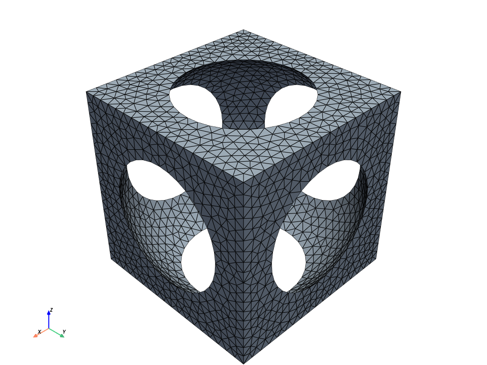
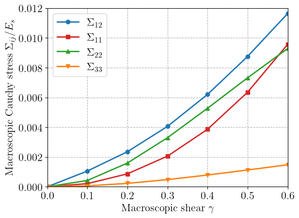
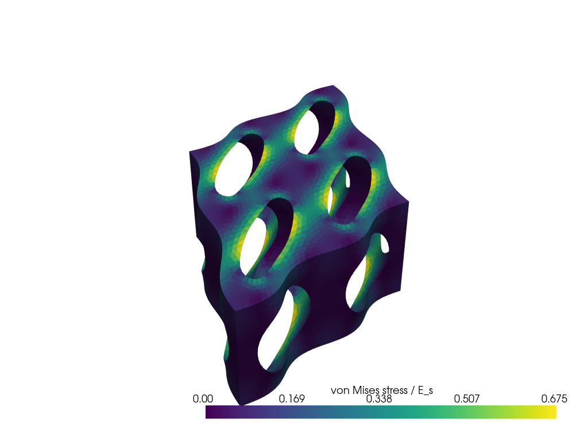

Finite-strain periodic homogenization of a soft open-cell foam #
Objectives
This tour computes the effective response of a soft periodic foam at finite strain. The unit cell is a cube of hyperelastic material containing a large spherical pore, which leaves a network of curved struts. The cell is loaded by a prescribed macroscopic deformation gradient and the effective stress is obtained by averaging. We show how to enforce periodicity on a cube with dolfinx_mpc without redundant constraints on ridges and vertices, and we compute the normal stresses that develop under large simple shear.
\(\newcommand{\bF}{\boldsymbol{F}}
\newcommand{\bP}{\boldsymbol{P}}
\newcommand{\bI}{\boldsymbol{I}}
\newcommand{\bX}{\boldsymbol{X}}
\newcommand{\bx}{\boldsymbol{x}}
\newcommand{\bN}{\boldsymbol{N}}
\newcommand{\bw}{\boldsymbol{w}}
\newcommand{\be}{\boldsymbol{e}}
\newcommand{\bsig}{\boldsymbol{\sigma}}
\newcommand{\bSig}{\boldsymbol{\Sigma}}
\newcommand{\bFbar}{\overline{\boldsymbol{F}}}
\newcommand{\bPbar}{\overline{\boldsymbol{P}}}
\newcommand{\T}{^\text{T}}
\newcommand{\tr}{\operatorname{tr}}
\newcommand{\Div}{\operatorname{Div}}
\newcommand{\dY}{\,\text{d}Y}
\newcommand{\cY}{\mathcal{Y}}\)

Attention
This tour requires DOLFINx v0.11 and the dolfinx_mpc add-on package (v0.11) to enforce periodic boundary conditions. Installation instructions are given in the dolfinx_mpc repository.
Download sources
See also
The small-strain counterpart of this tour is Periodic homogenization of linear elasticity . The constitutive model builds on the Hyperelasticity introductory tour.
Finite-strain periodic homogenization#
Kinematics of the unit cell#
We consider a cubic unit cell \(\cY = [0, a]^3\), repeated periodically along the three directions \(a\be_1\), \(a\be_2\), \(a\be_3\). The cell contains a solid part \(\cY_s\) and a pore, whose surface is traction-free. The unit cell is subjected to a given macroscopic deformation gradient \(\bFbar\). The current position of a material point \(\bX \in \cY_s\) is split into an affine part and a periodic fluctuation \(\bw\):
so that the microscopic deformation gradient reads \(\bF = \bFbar + \nabla\bw\). The cell edges, and hence the lattice vectors \(a\be_i\), are transformed by \(\bFbar\).
Local problem and effective stress#
For a hyperelastic material with strain energy density \(\psi(\bF)\), the fluctuation minimizes the energy of the cell over periodic fields:
where the energy is divided by the volume of the whole cell \(|\cY| = a^3\), pore included. Its first-order optimality condition is the weak form of the local equilibrium:
where \(\bP = \dfrac{\partial\psi}{\partial\bF}\) is the first Piola-Kirchhoff stress. In strong form, \(\Div\bP = 0\) in \(\cY_s\), the pore surface is traction-free, and the traction \(\bP\cdot\bN\) is anti-periodic on the cell boundary.
Thanks to the Hill-Mandel condition [Hill, 1972], the macroscopic first Piola-Kirchhoff stress is the volume average of the local stress, the pore carrying no stress, and it derives from the effective energy [Miehe, 2003]:
The macroscopic Cauchy stress follows as \(\bSig = \bPbar\,\bFbar\T/\det\bFbar\). It is the average of the local Cauchy stress over the deformed unit cell.
Constitutive model#
The solid is a soft, nearly incompressible elastomer described by a compressible neo-Hookean model:
Compared with the Hyperelasticity tour, the volumetric term is written with \(\ln J\), which keeps the energy convex in \(\ln J\) under strong compression.
Periodic boundary conditions without redundant constraints#
Periodicity is imposed with a MultiPointConstraint from dolfinx_mpc: each slave degree of freedom on the “upper” boundary of the cell is eliminated and expressed in terms of master degrees of freedom on the opposite side. This elimination is consistent only if every slave is constrained once, maps onto masters that are not themselves slaves, and is not also subject to a Dirichlet condition.
On a cube, a node on a ridge belongs to two faces and a vertex belongs to three faces. Applying one face-to-face constraint per direction therefore constrains ridge nodes twice and chains the upper vertices back to the origin, which is itself fixed to remove rigid translations. The resulting reduced system is inconsistent: Newton iterations lose their quadratic convergence and local fields near ridges and vertices are corrupted, even though the effective stress may look reasonable.
We therefore build the constraints hierarchically, so that each boundary node is handled exactly once:
Entity |
Slaves |
Masters |
|---|---|---|
Faces |
interior of the three faces \(X_i = a\) |
interior of the opposite faces \(X_i = 0\) |
Ridges |
interior of the 9 edges having at least one coordinate equal to \(a\) |
interior of the 3 edges through the origin |
Vertices |
none |
all 8 vertices set to \(\bw = 0\) by a Dirichlet condition |
All slaves use the same map, which subtracts \(a\) from every coordinate equal to \(a\). By periodicity, the eight vertices carry the same fluctuation; setting it to zero also removes the rigid body translations, which periodicity does not fix. In the foam considered here, the struts run along the cell edges, so ridges and vertices lie in the solid and all three levels are needed.
Important
The same hierarchy (edge interiors first, then corners fixed by a Dirichlet condition) is used in 2D in Periodic homogenization of linear elasticity . Mapping corners through two successive edge constraints creates chained slaves, which mostly goes unnoticed on effective properties but corrupts local stress fields near the corners.
Implementation#
Periodic foam cell#
We consider a cell of size \(a=1\) with a spherical pore of radius \(R=0.6\,a\) centered in the cell. Since \(R > a/2\), the pore cuts every face of the cube along a circular window of radius \(\sqrt{R^2-a^2/4} \approx 0.33\,a\), through which it connects to the pores of the six neighboring cells. The remaining solid is an open-cell foam made of curved struts along the cube edges, meeting at the cube vertices.
Periodic meshing with gmsh requires opposite faces with identical topology. We build one octant of the cell, \([0, a/2]^3\) minus the pore, and mirror it with respect to the three mid-planes. The fragment operation glues the eight copies into a conforming geometry, and setPeriodic makes the surface meshes of opposite faces identical, so that each slave node has a matching master node.
import numpy as np
import matplotlib.pyplot as plt
from mpi4py import MPI
import gmsh
import ufl
from dolfinx import fem, io, plot
import dolfinx.fem.petsc
import dolfinx_mpc
a = 1.0 # unit cell size
R = 0.6 * a # pore radius
hsize = 0.06 * a # mesh size
gdim = 3
comm = MPI.COMM_WORLD
model_rank = 0

The solid fraction of the cell is:
dx = ufl.Measure("dx", domain=domain, metadata={"quadrature_degree": 4})
cell_volume = a**3
solid_fraction = (
comm.allreduce(fem.assemble_scalar(fem.form(1 * dx)), op=MPI.SUM) / cell_volume
)
print(f"Solid fraction: {solid_fraction:.3f}")
Solid fraction: 0.204
Material properties#
Stresses are normalized by the Young’s modulus \(E_s\) of the solid, which is nearly incompressible (\(\nu_s = 0.45\)).
E = fem.Constant(domain, 1.0)
nu = fem.Constant(domain, 0.45)
mu = E / 2 / (1 + nu)
lmbda = E * nu / (1 + nu) / (1 - 2 * nu)
Fluctuation space and periodic constraints#
The fluctuation \(\bw\) is discretized with quadratic Lagrange tetrahedra. We first fix the eight vertices with a Dirichlet condition. The helper functions below test whether a point lies on a boundary plane (\(X_i = 0\) or \(a\)) or on an upper plane (\(X_i = a\)), coordinate by coordinate.
V = fem.functionspace(domain, ("P", 2, (gdim,)))
tol = 1e-8
def on_boundary_plane(x):
"""Array of shape (3, N): True where coordinate i equals 0 or a."""
return np.isclose(x, 0.0, atol=tol) | np.isclose(x, a, atol=tol)
def on_upper_plane(x):
"""Array of shape (3, N): True where coordinate i equals a."""
return np.isclose(x, a, atol=tol)
def vertices(x):
return np.all(on_boundary_plane(x), axis=0)
vertex_dofs = fem.locate_dofs_geometrical(V, vertices)
bcs = [fem.dirichletbc(np.zeros(gdim), vertex_dofs, V)]
The periodic map sends a slave point to its master by subtracting \(a\) from every coordinate equal to \(a\). Face slaves have exactly one coordinate on a boundary plane, ridge slaves exactly two. Passing bcs to each constraint ensures that the vertex dofs are never used as slaves.
def periodic_map(x):
y = x.copy()
y[on_upper_plane(x)] -= a
return y
def face_slaves(i):
"""Interior of face X_i = a."""
def indicator(x):
num_boundary_coords = np.sum(on_boundary_plane(x), axis=0)
return on_upper_plane(x)[i] & (num_boundary_coords == 1)
return indicator
def ridge_slaves(i):
"""Interior of the edges parallel to e_i, except the one through the origin."""
def indicator(x):
others = [j for j in range(gdim) if j != i]
num_boundary_coords = np.sum(on_boundary_plane(x), axis=0)
return (
~on_boundary_plane(x)[i]
& (num_boundary_coords == 2)
& np.any(on_upper_plane(x)[others], axis=0)
)
return indicator
mpc = dolfinx_mpc.MultiPointConstraint(V)
for i in range(gdim):
mpc.create_periodic_constraint_geometrical(V, face_slaves(i), periodic_map, bcs)
for i in range(gdim):
mpc.create_periodic_constraint_geometrical(V, ridge_slaves(i), periodic_map, bcs)
mpc.finalize()
Nonlinear variational problem#
The macroscopic deformation gradient \(\bFbar\) is a fem.Constant, updated at each load step. As in the small-strain tour, the unknown fluctuation must live in the constrained space mpc.function_space. The residual is obtained by differentiating the cell energy (38), and the consistent tangent by differentiating the residual. The measure dx defined above uses a quadrature degree of 4 for these non-polynomial integrands. No term is needed on the pore surface, which is traction-free.
Fbar = fem.Constant(domain, np.eye(gdim))
w = fem.Function(mpc.function_space, name="Fluctuation")
w_ = ufl.TestFunction(V)
dw = ufl.TrialFunction(V)
F = ufl.variable(Fbar + ufl.grad(w))
J = ufl.det(F)
psi = mu / 2 * (ufl.tr(F.T * F) - 3 - 2 * ufl.ln(J)) + lmbda / 2 * ufl.ln(J) ** 2
P = ufl.diff(psi, F)
residual = ufl.derivative(psi * dx, w, w_)
tangent = ufl.derivative(residual, w, dw)
The problem is solved with the PETSc SNES Newton solver through the NonlinearProblem class of dolfinx_mpc, which assembles the residual and tangent of the constrained system. Linear systems are solved with MUMPS.
problem = dolfinx_mpc.NonlinearProblem(
residual,
w,
mpc,
bcs=bcs,
J=tangent,
petsc_options_prefix="periodic_foam_",
petsc_options={
"snes_type": "newtonls",
"snes_linesearch_type": "basic",
"snes_atol": 1e-8,
"snes_rtol": 1e-8,
"ksp_type": "preonly",
"pc_type": "lu",
"pc_factor_mat_solver_type": "mumps",
},
)
The effective stress \(\bPbar\) is computed by integrating each component of \(\bP\) over the solid and dividing by the volume of the whole cell. The forms are compiled once, outside the loading loop.
P_forms = [[fem.form(P[i, j] * dx) for j in range(gdim)] for i in range(gdim)]
def effective_stress():
return (
np.array(
[
[
comm.allreduce(fem.assemble_scalar(P_forms[i][j]), op=MPI.SUM)
for j in range(gdim)
]
for i in range(gdim)
]
)
/ cell_volume
)
Large simple shear#
We apply a macroscopic simple shear \(\bFbar = \bI + \gamma\,\be_1\otimes\be_2\), with \(\gamma\) increasing from 0 to 0.6 in 6 load steps. Each step starts from the previous fluctuation. We record the macroscopic Cauchy stress \(\bSig = \bPbar\,\bFbar\T/\det\bFbar\).
gamma_values = np.linspace(0.0, 0.6, 7)
Sigma = np.zeros((len(gamma_values), gdim, gdim))
w.x.array[:] = 0.0
for n, gamma in enumerate(gamma_values[1:], start=1):
Fbar.value[0, 1] = gamma
_, reason, num_its = problem.solve()
assert reason > 0, f"Newton solver did not converge (reason {reason})"
Fb = Fbar.value.copy()
Sigma[n] = effective_stress() @ Fb.T / np.linalg.det(Fb)
if comm.rank == 0:
print(
f"gamma = {gamma:.2f}: {num_its} Newton iterations, "
f"Sigma_12 = {Sigma[n, 0, 1]:.2e}, Sigma_11 = {Sigma[n, 0, 0]:.2e}, "
f"Sigma_22 = {Sigma[n, 1, 1]:.2e}, Sigma_33 = {Sigma[n, 2, 2]:.2e}"
)
gamma = 0.10: 3 Newton iterations, Sigma_12 = 1.06e-03, Sigma_11 = 2.09e-04, Sigma_22 = 4.21e-04, Sigma_33 = 5.93e-05
gamma = 0.20: 4 Newton iterations, Sigma_12 = 2.35e-03, Sigma_11 = 8.68e-04, Sigma_22 = 1.59e-03, Sigma_33 = 2.27e-04
gamma = 0.30: 4 Newton iterations, Sigma_12 = 4.05e-03, Sigma_11 = 2.06e-03, Sigma_22 = 3.29e-03, Sigma_33 = 4.80e-04
gamma = 0.40: 5 Newton iterations, Sigma_12 = 6.20e-03, Sigma_11 = 3.86e-03, Sigma_22 = 5.27e-03, Sigma_33 = 7.88e-04
gamma = 0.50: 5 Newton iterations, Sigma_12 = 8.76e-03, Sigma_11 = 6.35e-03, Sigma_22 = 7.32e-03, Sigma_33 = 1.13e-03
gamma = 0.60: 5 Newton iterations, Sigma_12 = 1.16e-02, Sigma_11 = 9.57e-03, Sigma_22 = 9.29e-03, Sigma_33 = 1.48e-03
Results#
Effective stresses#
plt.figure()
plt.plot(gamma_values, Sigma[:, 0, 1], "o-C0", label=r"$\Sigma_{12}$")
plt.plot(gamma_values, Sigma[:, 0, 0], "s-C3", label=r"$\Sigma_{11}$")
plt.plot(gamma_values, Sigma[:, 1, 1], "^-C2", label=r"$\Sigma_{22}$")
plt.plot(gamma_values, Sigma[:, 2, 2], "v-C1", label=r"$\Sigma_{33}$")
plt.xlabel(r"Macroscopic shear $\gamma$")
plt.ylabel(r"Macroscopic Cauchy stress $\Sigma_{ij}/E_s$")
plt.legend()
plt.show()

At small shear, the slope of \(\Sigma_{12}\) gives the effective shear modulus of the foam. In the cubic cell, shearing in the \((\be_1, \be_2)\) plane mainly bends the struts, so the foam is much softer than the solid. Its modulus is of the same order as the classical estimate \(G^*/E_s \approx \frac{3}{8}\phi^2\) for bending-dominated open-cell foams of solid fraction \(\phi\) [Gibson and Ashby, 1997].
G_eff = Sigma[1, 0, 1] / gamma_values[1]
mu_s = float(mu)
print(f"Effective shear modulus: G*/E_s = {G_eff:.4f}, i.e. {G_eff / mu_s:.3f} mu_s")
print(f"Open-cell foam estimate 3/8 phi^2 = {3 / 8 * solid_fraction**2:.4f}")
Effective shear modulus: G*/E_s = 0.0106, i.e. 0.031 mu_s
Open-cell foam estimate 3/8 phi^2 = 0.0155
The normal stresses behave very differently from those of the bulk solid. For the neo-Hookean solid alone, simple shear is isochoric and gives \(\Sigma_{12} = \mu_s\gamma\), \(\Sigma_{11} = \mu_s\gamma^2\) and \(\Sigma_{22} = \Sigma_{33} = 0\). The foam instead develops tensile normal stresses in all three directions, which grow quadratically with \(\gamma\) and become comparable to the shear stress at large shear. In particular, \(\Sigma_{22} > 0\): the foam would pull shearing plates together, or contract in the \(\be_2\) direction if left free. Since the struts are much stiffer in stretching than in bending, these normal stresses are dominated by the second-order stretching of the strut network: the lattice vector \(a\be_2\) is elongated by \(\bFbar\) into \(a(\be_2 + \gamma\be_1)\), of length \(a\sqrt{1+\gamma^2}\).
For any isotropic elastic material in simple shear, Rivlin’s universal relation \(\Sigma_{11} - \Sigma_{22} = \gamma\,\Sigma_{12}\) holds whatever the strain energy. The cubic foam is strongly anisotropic and violates it, as the ratio below shows.
ratio = (Sigma[1:, 0, 0] - Sigma[1:, 1, 1]) / (gamma_values[1:] * Sigma[1:, 0, 1])
for gamma, r in zip(gamma_values[1:], ratio):
print(f"gamma = {gamma:.2f}: (Sigma_11 - Sigma_22) / (gamma Sigma_12) = {r:+.3f}")
gamma = 0.10: (Sigma_11 - Sigma_22) / (gamma Sigma_12) = -2.007
gamma = 0.20: (Sigma_11 - Sigma_22) / (gamma Sigma_12) = -1.537
gamma = 0.30: (Sigma_11 - Sigma_22) / (gamma Sigma_12) = -1.017
gamma = 0.40: (Sigma_11 - Sigma_22) / (gamma Sigma_12) = -0.569
gamma = 0.50: (Sigma_11 - Sigma_22) / (gamma Sigma_12) = -0.221
gamma = 0.60: (Sigma_11 - Sigma_22) / (gamma Sigma_12) = +0.040
Deformed foam#
The total displacement is \(\bx - \bX = (\bFbar - \bI)\cdot\bX + \bw\). We plot \(2\times 2\times 1\) deformed unit cells at the final load step, colored by the local von Mises equivalent Cauchy stress. The struts are bent into S-shapes between rotated nodes, and adjacent cells fit together, as expected from the periodic fluctuation.
u_total = fem.Function(V, name="Displacement")
u_total.interpolate(
fem.Expression(
(Fbar - ufl.Identity(gdim)) * ufl.SpatialCoordinate(domain) + w,
V.element.interpolation_points,
)
)
W0 = fem.functionspace(domain, ("DG", 0))
sigma = P * F.T / J
s = ufl.dev(sigma)
sigma_eq = fem.Function(W0, name="sigma_eq")
sigma_eq.interpolate(
fem.Expression(ufl.sqrt(3 / 2 * ufl.inner(s, s)), W0.element.interpolation_points)
)

References#
Lorna J. Gibson and Michael F. Ashby. Cellular Solids: Structure and Properties. Cambridge University Press, 2 edition, 1997.
Rodney Hill. On constitutive macro-variables for heterogeneous solids at finite strain. Proceedings of the Royal Society of London. A. Mathematical and Physical Sciences, 326(1565):131–147, 1972.
Christian Miehe. Computational micro-to-macro transitions for discretized micro-structures of heterogeneous materials at finite strains based on the minimization of averaged incremental energy. Computer Methods in Applied Mechanics and Engineering, 192(5-6):559–591, 2003.